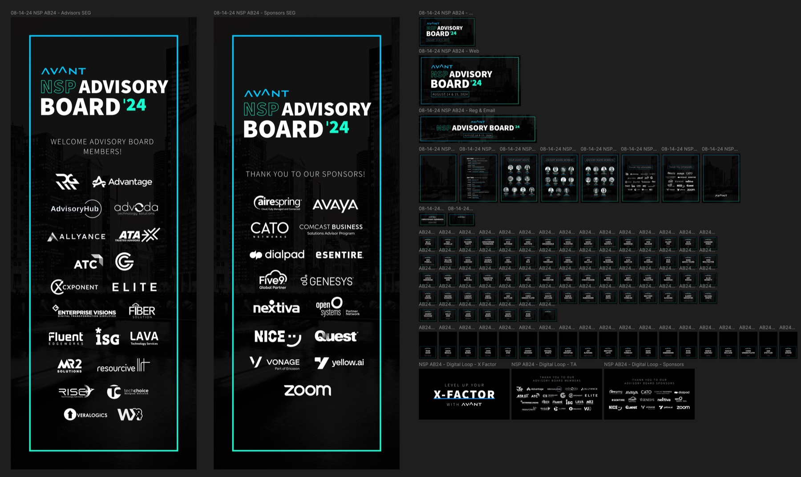
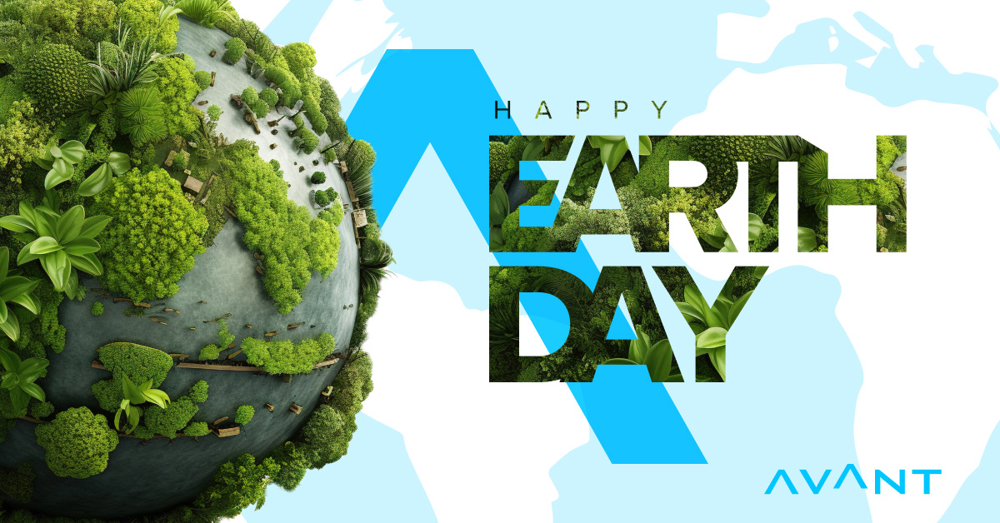
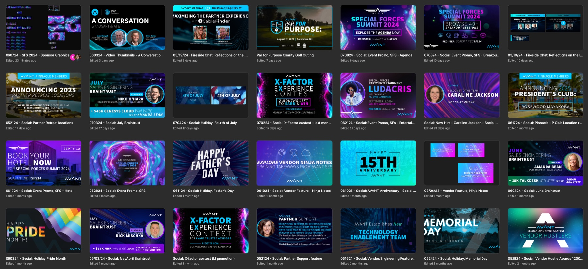
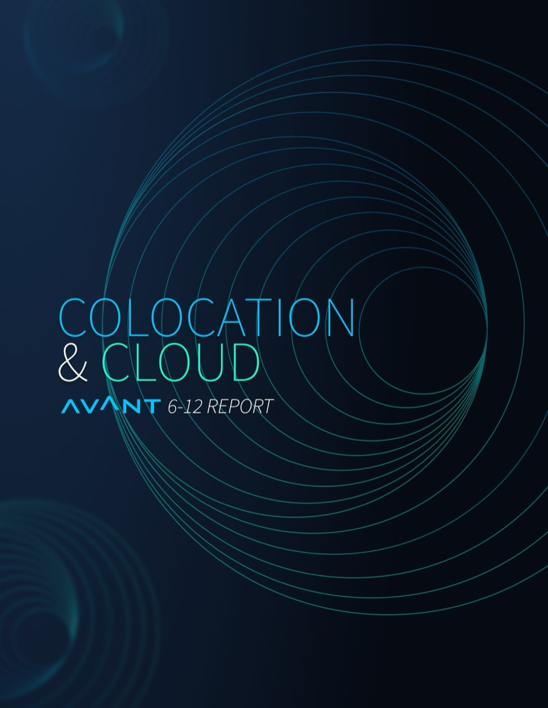
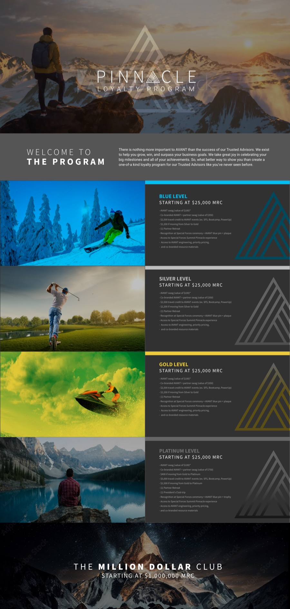

Avant Communications · System Extension · 2024
Marketing Design Library
The Pathfinder system's foundations, extended into a self-serve marketing library. 350+ Trusted Advisors producing on-brand work without a designer in the loop.
After the product system unified Pathfinder, marketing was the next bottleneck: high asset volume, no shared foundations, and every campaign re-litigating the basics. The job was adapting the existing system for non-designers, who need harder rails and warmer documentation.
One template, a lot of room inside it. "Forge the Future" set the model: a locked typographic and brand structure with expressive visual fields, so campaign variants multiply without drift. Dozens of banner and social formats came from one template logic.
From campaign to calendar. The same template logic carried event creative and the social calendar. The NSP Advisory Board '24 package ran from stage screens to badges to email out of one Figma system, and holiday socials shipped on-brand without waiting on a designer.


Beyond banners. The library covered the unglamorous, high-volume work: 40-page industry reports, partner enablement, and event material, with templates carrying the brand's editorial layer so a report and a LinkedIn banner read as one company. The pattern throughout: I made the materials first (covers, reports, campaign assets), then refined each one into the library as a template the team could ship from.
Enablement over enforcement. Adoption ran through training sessions and self-serve guides written for non-designers. The training did more for scale than any template.


A worked example. The 2024 Colo & Cloud Report became the library's proof case for editorial work: a 40-page industry report designed on the same rails as the campaign and social kits.
Exploration inside the rails. Dozens of cover concepts in geometric, gradient, and fluid-wave directions, all drawn from the same brand palette, before the final was picked. The system constrained the exploration without flattening it.

Built to travel. The final cover shipped production-ready and co-branded for partner distribution, with interior templates carrying the brand's editorial voice across every page.
Refined back in. As with the campaign work, the finished report was distilled into library templates, so the next report started at eighty percent instead of zero.
The library became the default path because it was faster than the old way. Marketing stopped rebuilding basics, revision cycles on routine assets collapsed, and brand consistency stopped depending on any one person's vigilance, including mine.
A marketing library is a design system with a different user. Same architecture, different empathy.
Pinnacle. The loyalty program microsite: tiered rewards told through altitude, from base level to summit, built entirely inside the library's template logic.

Imagery © Avant Communications. Some details generalized per confidentiality.